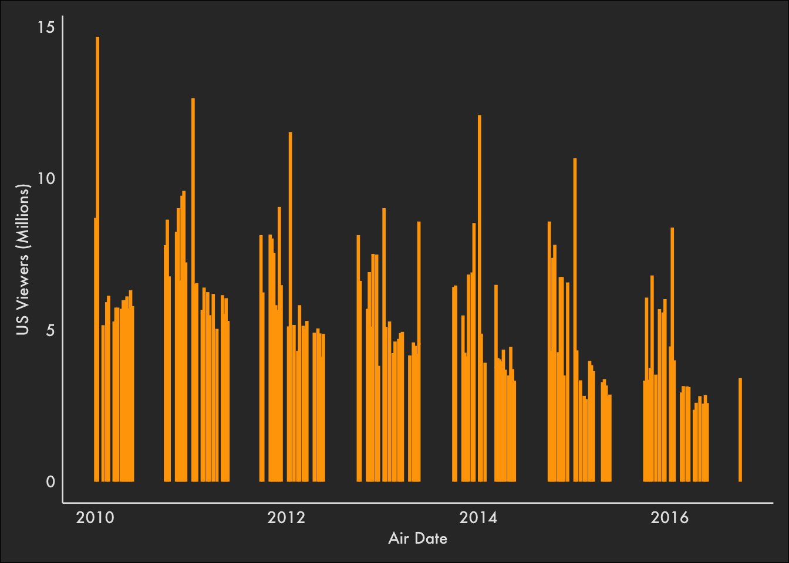
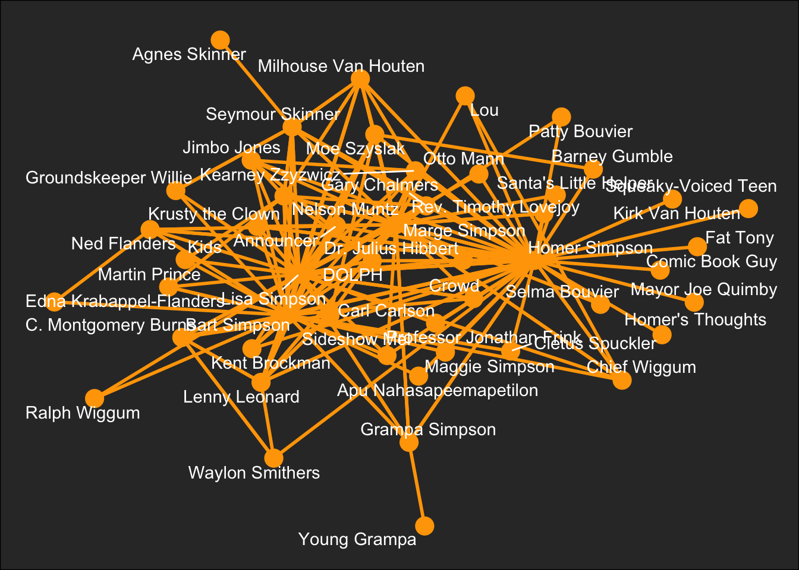

options(tidyverse.quiet = TRUE)
library(tidytuesdayR)
library(tidyverse)
library(ggraph)
library(igraph)
library(visNetwork)Simpsons #TidyTuesday 2025-02-04
source("../helpers/tttheme.R")load(file="simpsons.Rdata")Viewers Over Time
simpsons_episodes |>
ggplot(aes(x = original_air_date, y = us_viewers_in_millions)) +
geom_col(colour = "orange") +
scale_x_date("Air Date") +
scale_y_continuous("US Viewers (Millions)") +
theme_tt() 
Character Co-occurrence
shared_scenes <- simpsons_script_lines |> group_by(episode_id, location_id) |> select(raw_character_text) |> drop_na(raw_character_text) |> unique() |> nest(data = raw_character_text) Adding missing grouping variables: `episode_id`, `location_id`character_cooc <- shared_scenes |> ungroup() |> select(data) |> pull(1) |> map(\(x){
if(nrow(x) > 1){
x |> pull(1) |> combn(2) |> t() |> as_tibble()
}
}) |> list_rbind() character_cooc_net <- character_cooc |> group_by(V1, V2) |>
summarise(weight = n(), .groups = "keep") |> arrange(desc(weight))simpsons_graph <- character_cooc_net |> filter(weight > 10) |>
graph_from_data_frame(directed = F)
simpsons_graph|>
ggraph(layout = "stress") +
geom_edge_link(width = 1, colour = "orange") +
geom_node_point(size = 5, colour = "orange") +
geom_node_text(aes(label = name), repel = TRUE, colour = "white") +
theme_tt() +
theme(axis.line=element_blank(),
axis.text.x=element_blank(),
axis.text.y=element_blank(),
axis.ticks=element_blank(),
axis.title.x=element_blank(),
axis.title.y=element_blank(),
legend.position="none")
# https://github.com/datastorm-open/visNetwork/issues/65#issuecomment-414654329
degree_value <- degree(simpsons_graph)
img_path <- "https://paulusm-research-images.s3.eu-west-1.amazonaws.com/simpsons/"
V(simpsons_graph)$shape <- "image"
V(simpsons_graph)$value <- degree_value[match(V(simpsons_graph)$name, names(degree_value))]
V(simpsons_graph)$image <- paste0(img_path, str_replace(str_to_lower(V(simpsons_graph)$name), " ", "_"), ".png")
E(simpsons_graph)$value <- E(simpsons_graph)$weight
# Good layouts: layout_on_sphere, layout_with_kk, layout_with_dh
visIgraph(simpsons_graph,
idToLabel = TRUE,
layout = "layout_on_sphere",
physics = FALSE,
smooth = FALSE,
type = "full",
randomSeed = NULL,
layoutMatrix = NULL
) |>
visNodes(size = 12) |>
visEdges(color = "orange", width = 0.5) |>
visOptions(width="100%",highlightNearest = list(enabled = TRUE, degree = 1, hover = TRUE, labelOnly = FALSE)) |>
visInteraction(navigationButtons = TRUE, zoomView = TRUE) |>
visPhysics(stabilization = TRUE)